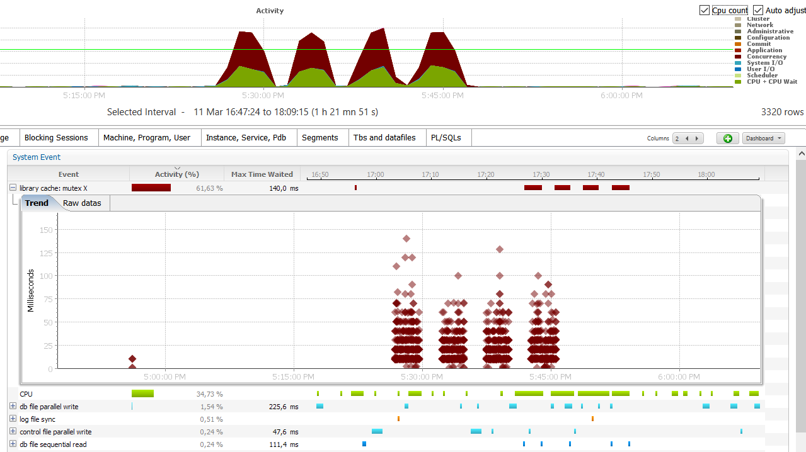

In multitenant, there are two goals: consolidation within the same container database and isolation of pluggable databases. I see multitenant consolidation as an extension of schema consolidation. What is not possible in schema consolidation, such as public objects name collision, is now possible with pluggable databases. 10 years ago I administrated on a database with high level of consolidation: 3000 schemas with same structure and different data. The big scalability issue there was library cache waits (it was 10g) because same SQL statements running on thousands of schemas means parent cursors with lot of child. When 12c came out, and I’ve seen that Multitenant shares the parent cursor, then I wanted to compare library cache contention between schema consolidation an pluggable database consolidation. I’ve created 50 pluggable databases PDB001 to PDB050 with 50 users in each USER001 to USER050. I prepared the following script:
begin for i in 1..1000 loop execute immediate 'select * from dual'; execute immediate 'select '||i||' from dual'; end loop; end; /The idea is to run the same statement in a loop, with other different statements to avoid cursor caching. Actually my goal is to simulate what we find sometimes with connection pools that run a ‘select from dual’ before grabbing a session, just to check it is still there. I’ve run 50 concurrent sessions with that script in the following connections:
And here are the 4 runs displayed by Orachrome Lighty, my favorite tool to display database performance statistics. 
Good reference for mutexes are Tanel Poder and Andrey Nikolaev. http://blog.tanelpoder.com/files/Oracle_Latch_And_Mutex_Contention_Troubleshooting.pdf
Basically here, “library cache: mutex X” is the most important wait event and it’s contention on library cache because of the hard parses.
Then, I changed the script to add more contention. I artificially multiply the number of child cursors. In addition to the 50 ones (not shared because of different user and/or container) I change an optimizer parameter to get 50 different versions:
begin for i in 1..50 loop execute immediate 'alter session set optimizer_index_cost_adj='||i; for j in 1..20 loop execute immediate 'select * from dual'; execute immediate 'select '||i||'+'||j||' from dual'; end loop; end loop; end; /
The time it takes is longer than when we had only one version, but it’s still the same time in container consolidation vs. schema consolidation:
“cursor: mutex X” appears here. It’s the contention on the parent cursor because of the multiple versions to search.
So, in current version (I tested on 12.1.0.2) multitenant consolidation is the same as schema consolidation: not worse and not better. This was designed on purpose: sharing the parent cursor saves memory by avoiding to store same information multiple times. It’s the goal of consolidation. The non-sharing is done at child cursor level.
This means that bad application design that lead to library cache contention in schema consolidation will not be better when separating into multiple pluggable databases. When you want explicitly to avoid sharing, then you have either to set different optimizer parameter (I dream of a dummy one, just to avoid sharing without changing anything else) or to issue different statements. In following example, I add the connection info as comment in the statement:
begin for i in 1..1000 loop execute immediate 'select /*+ &_USER.@&_CONNECT_IDENTIFIER */ * from dual'; execute immediate 'select '||i||' from dual'; end loop; end; /
And here is the result. No contention except when I connect with same user and same service:
Please, don’t hesitate to comment. Even if contention on library cache has improved at each release, high number of versions are always a problem. Especially with bad application design that parse too often. Reading a long chain of child cursors can take a long time and requires exclusive latch on parent cursor. PSU 11.2.0.2.2 introduced cursor obsolescence to limit the number of child cursor, but some bugs came with that. In 12.1 it’s limited to 1024 child cursors. With hundreds of pluggable databases we can reach that very quickly because of the many reasons for non-sharing (bind length, NLS settings, adaptive cursor sharing, etc).
On additional note, if you look at V$SQL_SHARED_CURSOR you don’t see any reason for the non-sharing when it’s because of different container. A enhancement request has been opened for that.
{kind=link}
{kind=link}
{kind=link}
Great blog post, as always Franck . I dont remember off the top of my head but we may consider reducing long child chains via something called cursor obsolete threshold (_cursor_obsolete_threshold) I believe . Not sure if this lifts the contention though . Regards GG
Hi Greg G, Thanks. Yes, _cursor_obsolete_threshold helps but also brings other problems. See Bugs 13364735 10264680 11699057 11069199 14585499. So maybe the default value can be raised for CDB that run lot of PDBs of same applications, given that they have a correct design (not parsing each execution, using bind variables, etc) Regards, Franck.